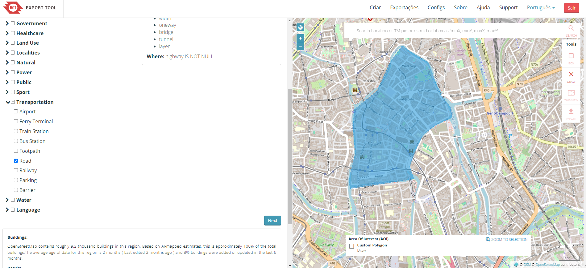
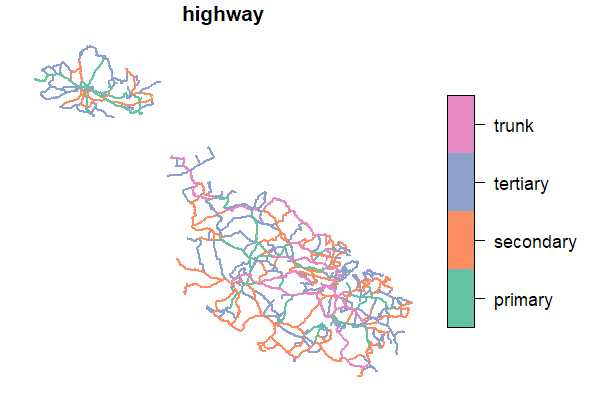
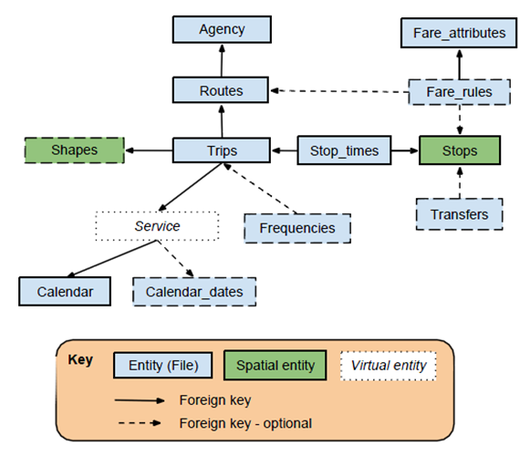

Code
Gent = sf::st_read("data/Gent_center.gpkg", quiet = TRUE)
mapview::mapview(Gent, zcol = "highway")In this chapter we will guide you through sources of open data for transportation analysis: road networks and public transportation information.
The OpenStreetMap is a collaborative online mapping project that creates a free editable map of the world.
This is the most used source of road network data for transportation analysis in academia, since it is available almost everywhere in the world, is open and free to use.
Although it can be not 100% accurate, OSM is a good source of data for most of the cases.
You can access it’s visualization tool at www.openstreetmap.org. To edit the map, you can use the Editor, once you register.
If you want to download the data, you can use the following tools.
These websites include all the OSM data, with much more information than you need.
This interactive tool helps you to select the region you want to extract, the type of information to include, and the output data format.
Access via export.hotosm.org1.

After the export, you can read in R using the sf package:
Gent = sf::st_read("data/Gent_center.gpkg", quiet = TRUE)
mapview::mapview(Gent, zcol = "highway")There are also some R packages that can help you to download and work with OpenStreetMap data, such as:
This is an example of how to download OpenStreetMap road network data using the osmextract package:
library(osmextract)
OSM_Malta = oe_get_network(place = "Malta") # it will geocode the place
Malta_main_roads = OSM_Malta |>
filter(highway %in% c("primary", "secondary", "tertiary", "trunk"))
plot(Malta_main_roads["highway"])
General Transit Feed Specification (GTFS) is standard format for documenting public transportation information, including: routes, schedules, stop locations, calendar patterns, trips, and possible transfers. Transit agencies are responsible for maintaining the data up-to-date.
This information is used in several applications, such as Google Maps, to provide public transportation directions. It can be offered for a city, a region, or even a whole country, depending on the PT agency.
The recent version 2 of the GTFS standard includes more information, such as real-time data.
The data is usually in a .zip file that includes several .txt files (one for each type of information) with tabular relations.

You can find most GTFS data in the following websites:
Some PT agencies also provide their open-data in their websites.
The European Union has a directive that requires the member states to provide access to transportation data. Data includes not only Public Transportation data, but also road networks, car parking, and other transportation-related information.
List of the European Union members states with National Access Points for Transportation data
Example of Bus services data in Belgium:
You need an OSM account to use it.↩︎